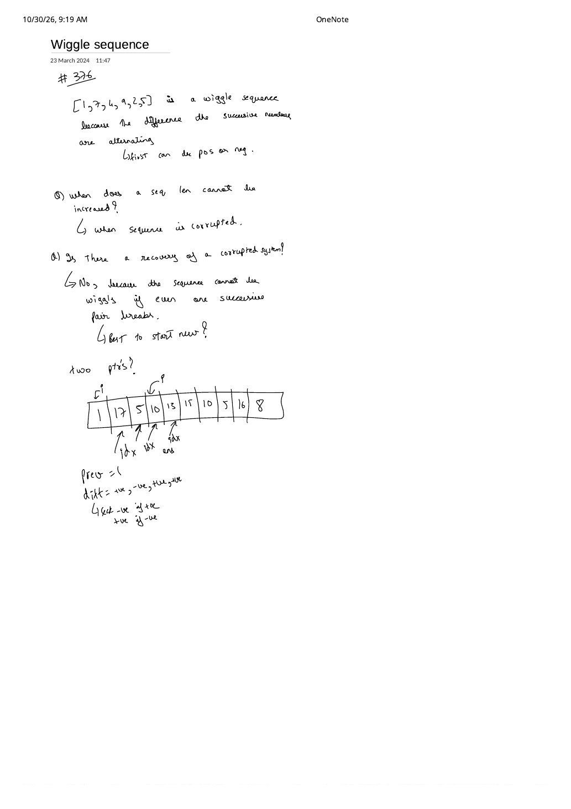

Wiggle Subsequence (LeetCode 376): Corrupted-Run Recovery, Peak/Valley Greedy & 2-State DP
Expanded from handwritten competitive coding study note: 11_Wiggle_sequence.pdf (1 page) · Jump to original scan
A sequence of numbers is called a wiggle sequence if the differences between successive elements strictly alternate between positive and negative (the first difference may be either positive or negative; a sequence of $1$ element, or $2$ unequal elements, trivially wiggles). On Page 1 of the handwritten note, [1, 7, 4, 9, 2, 5] has consecutive differences [+6, -3, +5, -7, +3], so the entire array of length 6 is a wiggle sequence.
Given an integer array nums, LeetCode 376 asks for the length of the longest wiggle subsequence (obtained by deleting zero or more elements without reordering the survivors). At first glance this looks like $\mathcal{O}(N^2)$ Longest Increasing Subsequence DP — yet a clean greedy exchange argument collapses it to a single $\mathcal{O}(N)$ pass in $\mathcal{O}(1)$ extra space!
1. Answering Page 1's Two Diagnostic Questions
Page 1 walks through nums = [1, 17, 5, 10, 13, 15, 10, 5, 16, 8] by posing two sharp questions:
- Q1: When can the wiggle sequence length NOT be increased?
Whenever the alternating sign pattern is corrupted — i.e., a+vestep is followed by another+vestep (such as the rising run $5 \to 10 \to 13 \to 15$), a-vestep is followed by another-vestep ($15 \to 10 \to 5$), or adjacent values tie ($\text{diff} = 0$). - Q2: Is there recovery from a corrupted run, or is it best to start new?
If the problem asked for a contiguous subarray (like LeetCode 978 Longest Turbulent Subarray), even one broken adjacent pair would force us to start a brand-new window. Here we are building a subsequence! Deleting intermediate elements inside a monotonic run heals the break completely without discarding our prefix — and even better, upgrading the endpoint to the run's extreme peak or valley strictly helps future steps!
[1, 17, 5, 10] (last step $+5$, so as written at the bottom of Page 1: "seek -ve if +ve, seek +ve if -ve"). Next come $13$ and $15$ (more +ve steps!). Should we keep $10$ or replace $10$ with $15$?
- Replacing $10 \to 15$ keeps the current subsequence length identical ($4$ elements:
[1, 17, 5, 15]). - To extend to length $5$, we need a future value $x$ strictly below our last element. Because $\{x : x < 15\} \supset \{x : x < 10\}$, every downward continuation valid after $10$ is also valid after $15$, plus values $x \in [10, 14]$ work ONLY after $15$! (Indeed, the very next number in the array is $10$ — which fails $10 < 10$ if we kept $10$, yet succeeds $10 < 15$ once we climbed to the peak $15$!)
[1, 17, 5, 10, 13, 15, 10, 5, 16, 8]: skipping interior monotone points 10, 13 (on $5 \to 15$) and 10 (on $15 \to 5$) selects the 7 alternating extrema [1, 17, 5, 15, 5, 16, 8].2. Brute $\mathcal{O}(N^2)$ DP $\to$ Two Equivalent $\mathcal{O}(N)$ / $\mathcal{O}(1)$-Space Formulations
- Baseline — $\mathcal{O}(N^2)$ LIS-Style DP ($\mathcal{O}(N)$ space):
Define
up[i]anddown[i]ending specifically at index $i$ by scanning all $j < i$: ifnums[j] < nums[i]updateup[i] = max(up[i], down[j] + 1); ifnums[j] > nums[i]updatedown[i] = max(down[i], up[j] + 1). - Optimal A — Greedy Sign-Flip Counter ($\mathcal{O}(N)$ time, $\mathcal{O}(1)$ space — matches Page 1's note):
Initialize
prevDiff = 0(accepting either sign for the very first turn) andcount = 1. At each step $i = 1 \dots N - 1$, computecurrDiff = nums[i] - nums[i - 1]:- Whenever
(currDiff > 0 && prevDiff <= 0) || (currDiff < 0 && prevDiff >= 0), we just crossed a genuine direction turn $\implies$ incrementcount++and setprevDiff = currDiff. - Critical Plateau Guard: Update
prevDiff = currDiffonly inside theif! IfcurrDiff == 0(e.g.[1, 2, 2, 1]) and you overwroteprevDiff = 0outside theif, then[1, 2, 2, 3]would seeprevDiff == 0before3and falsely count1 -> 2 -> 3as two turns!
- Whenever
- Optimal B — Space-Optimized 2-State
(up, down)DP ($\mathcal{O}(N)$ time, $\mathcal{O}(1)$ space): Letup(resp.down) be the longest wiggle subsequence anywhere in prefixnums[0..i]ending with a rising (resp. falling) step, initialized toup = 1, down = 1:- If
nums[i] > nums[i - 1]:up = down + 1(during a monotone climb $5 \to 10 \to 13 \to 15$,downstays frozen at $3$, soup = 3 + 1 = 4never double-counts!). - Else if
nums[i] < nums[i - 1]:down = up + 1.
- If
| $i$ | nums[i] |
currDiff |
Greedy (prevDiff, count) |
DP (up, down) |
|---|---|---|---|---|
| 0 | 1 | — | (0, 1) | (1, 1) |
| 1 | 17 | $+16$ | Turn! (+16, 2) | (2, 1) |
| 2 | 5 | $-12$ | Turn! (-12, 3) | (2, 3) |
| 3 | 10 | $+5$ | Turn! (+5, 4) | (4, 3) |
| 4 | 13 | $+3$ | Same sign (extend peak) $\to$ (+5, 4) | (4, 3) |
| 5 | 15 | $+2$ | Same sign (extend peak) $\to$ (+5, 4) | (4, 3) |
| 6 | 10 | $-5$ | Turn! (-5, 5) | (4, 5) |
| 7 | 5 | $-5$ | Same sign (extend valley) $\to$ (-5, 5) | (4, 5) |
| 8 | 16 | $+11$ | Turn! (+11, 6) | (6, 5) |
| 9 | 8 | $-8$ | Turn! (-8, 7) | (6, 7) $\to \max = \mathbf{7}$ |
3. Clean Reference Implementations (C++ & Python)
#include <bits/stdc++.h>
using namespace std;
// Formulation A: Greedy Sign-Flip / Peak-Valley Counter — O(N) time, O(1) space
int wiggleMaxLength(const vector<int>& nums) {
if (nums.empty()) return 0;
int prevDiff = 0, count = 1;
for (size_t i = 1; i < nums.size(); ++i) {
int currDiff = nums[i] - nums[i - 1];
if ((currDiff > 0 && prevDiff <= 0) || (currDiff < 0 && prevDiff >= 0)) {
++count;
prevDiff = currDiff; // ONLY update on a non-zero direction change!
}
}
return count;
}
// Formulation B: Equivalent 2-State (up, down) DP — O(N) time, O(1) space
int wiggleMaxLengthDP(const vector<int>& nums) {
if (nums.empty()) return 0;
int up = 1, down = 1;
for (size_t i = 1; i < nums.size(); ++i) {
if (nums[i] > nums[i - 1]) up = down + 1;
else if (nums[i] < nums[i - 1]) down = up + 1;
}
return max(up, down);
}def wiggle_max_length(nums: list[int]) -> int:
"""LeetCode 376 in O(N) time, O(1) extra space."""
if not nums:
return 0
up = down = 1
for i in range(1, len(nums)):
if nums[i] > nums[i - 1]:
up = down + 1
elif nums[i] < nums[i - 1]:
down = up + 1
return max(up, down)4. Complexity Summary & Key Edge Cases
- Time & Space: Single linear scan $\mathcal{O}(N)$ time and $\mathcal{O}(1)$ extra space (down from $\mathcal{O}(N^2)$ time and $\mathcal{O}(N)$ space in naive LIS-style DP).
- All-equal array (
[3, 3, 3, 3]): EverycurrDiff == 0, so neither branch fires and both implementations cleanly return1(a single element is a valid wiggle sequence of length $1$, not $2$!). - Strictly monotonic array (
[1, 2, 3, 4, 5]): Returns2(any pair such as[1, 5]).
From the Handwritten Notes
View original handwritten page — Wiggle Sequence, Page 1: Corrupted-Run Questions & 10-Element Trace


11_Wiggle_sequence.pdf p. 1: LC 376 definition on [1, 7, 4, 9, 2, 5], two diagnostic questions on corrupted runs, and sign-alternation trace on [1, 17, 5, 10, 13, 15, 10, 5, 16, 8].